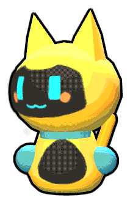
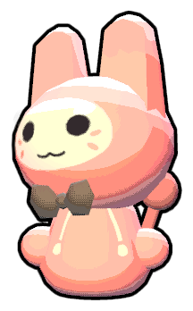
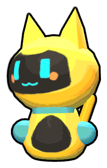
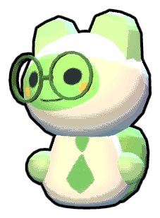
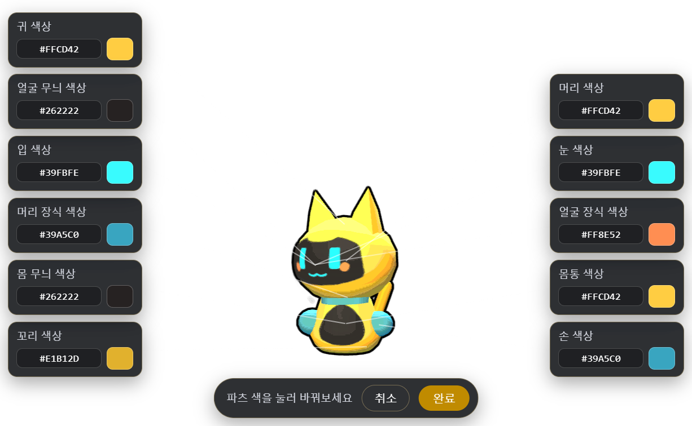
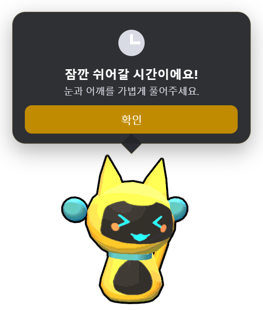
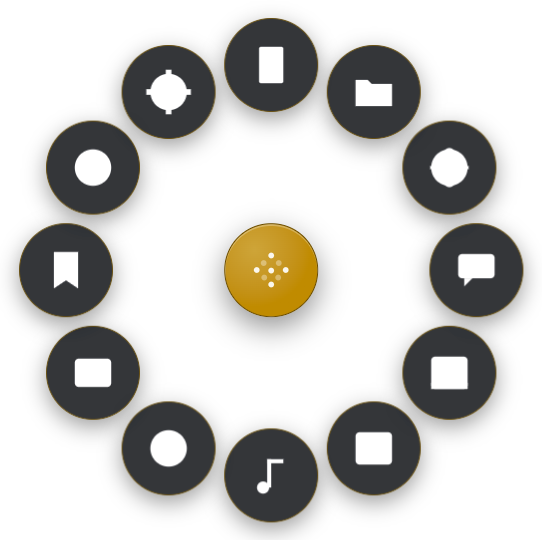
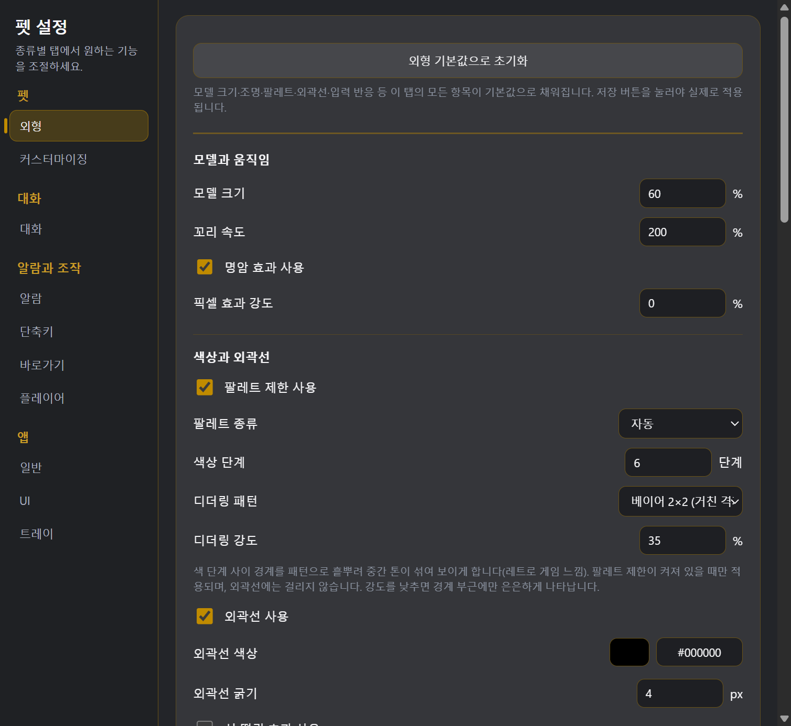

살아 있는 반응
커서 방향으로 고개를 돌리고, 빠르게 칠수록 꼬리를 크게 흔듭니다. 쓰다듬으면 기뻐하고, 오래 두면 잠이 듭니다.
마우스를 따라 보고, 타이핑에 맞춰 꼬리를 흔들고, 쓰다듬으면 좋아합니다. 평소에는 클릭이 그대로 통과되니 작업을 방해하지 않습니다.
Windows 10 · 11 | 설치본과 무설치(portable) 두 가지

반응하고, 꾸며지고, 일할 때 필요한 것들을 옆에서 챙겨줍니다.
커서 방향으로 고개를 돌리고, 빠르게 칠수록 꼬리를 크게 흔듭니다. 쓰다듬으면 기뻐하고, 오래 두면 잠이 듭니다.
부위별 색, 귀·꼬리·머리 장식 파츠, 눈·입 모양까지 고릅니다. 마음에 드는 조합은 프리셋으로 저장하세요.
픽셀 아트, 색 단계 제한, 디더링 8종, 외곽선과 선 떨림. 옛 게임 같은 질감을 직접 만듭니다.
N분마다·정시·매일 알람을 여러 개 등록하고, 체크리스트로 오늘 할 일을 관리합니다. 시간이 되면 펫이 만세하며 알려줍니다.
자주 쓰는 프로그램을 최대 12개. 단축키를 누른 자리에 부채꼴 메뉴가 펼쳐집니다.
Gemini API 키를 직접 넣으면 대화·번역·문서 요약까지 씁니다. 기본은 꺼져 있습니다.
색과 파츠를 바꾸면 이만큼 달라집니다. 설치하면 이 세 조합이 이미 들어 있고, 직접 만든 조합도 이름 붙여 저장할 수 있습니다.



✏️ 이 세 가지 말고도, 얼굴은 표정별 그림을 zip으로 묶어 넣고 몸 무늬는 PNG로 직접 그려 넣을 수 있습니다.
이름만 보고 고르기 어려울 때, 부위별 색 카드가 실제 위치와 선으로 이어져 펫 좌우에 뜹니다. 보면서 누르면 바로 반영됩니다.

쉬는 시간, 약 먹을 시간, 회의 5분 전. 알람마다 제목과 내용을 따로 적고 소리도 고를 수 있습니다. 매일 알람에는 날씨 브리핑을 얹을 수도 있습니다.

단축키를 누른 그 자리에 부채꼴로 펼쳐집니다. 펫 말풍선·독립 창·상시 플로팅 버튼 중에서 띄울 곳을 고를 수도 있습니다.

크기·꼬리 속도부터 조명의 색과 방향까지. 만지다 마음에 안 들면 "외형 기본값으로 초기화" 한 번이면 됩니다.

전역 입력을 다루는 프로그램인 만큼, 무엇을 하지 않는지 분명히 적어둡니다.
무엇을 눌렀는지는 기록하지 않고, 최근 몇 초 동안 몇 번 눌렸는지만 세서 꼬리 속도에 씁니다.
설정·할 일·기록은 모두 내 컴퓨터의 앱 폴더에 남습니다. 서버로 올라가지 않습니다.
대화 기능을 쓸 때 넣는 키는 Windows 보안 저장소에 암호화해 두고, 설정 백업 파일에도 들어가지 않습니다.
종료를 뺀 나머지는 원하는 조합으로 바꾸거나 개별로 끌 수 있습니다.
대화·즐겨찾기·체크리스트·번역 같은 기능은 전역 단축키로 바로 부릅니다. 기본 조합이 정해져 있고, 설정창에서 버튼을 누르고 원하는 키를 눌러 바꿀 수 있습니다. 안 쓰는 단축키는 개별로 끄면 됩니다.
아닙니다. 무엇을 눌렀는지는 저장하지 않고, 최근 몇 초 동안 몇 번 눌렸는지만 세서 꼬리 속도에 씁니다.
평소에는 클릭이 그대로 통과합니다. 말풍선이나 즐겨찾기 메뉴가 떠 있는 동안만 그 영역이 클릭을 받습니다.
전체화면 프로그램을 감지하면 펫과 알람을 잠시 치웁니다. 그 프로그램을 닫으면 다시 나타납니다.
Google Gemini의 무료 API 키를 직접 발급해 넣어서 씁니다. 기본은 꺼져 있고, 넣지 않아도 나머지 기능은 전부 그대로 쓸 수 있습니다.
설치본은 새 버전이 나오면 자동으로 받아 재시작할지 물어봅니다. portable은 설치 없이 실행 파일 하나로 쓰는 대신 새 버전을 직접 받아야 합니다.